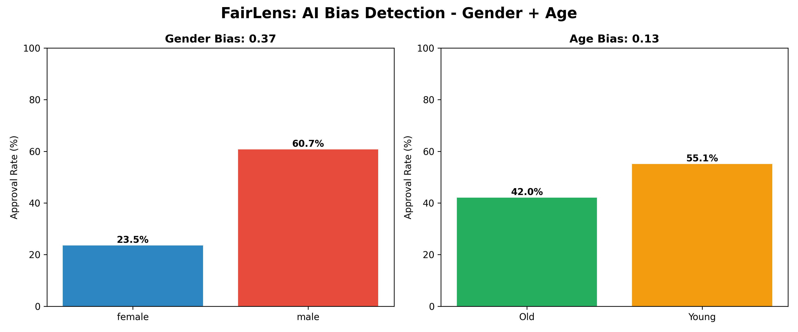

Scan any loan AI model for gender & age bias in 2 seconds. Built with Microsoft Fairlearn.
Actual results from python bias_check.py on German Credit Dataset

Connect any loan approval AI model + your dataset
Tests for Gender, Age, Race discrimination using Fairlearn metrics
Receive instant HIGH/LOW RISK flag + visual chart in terminal
Tech Stack: Python | Pandas | Microsoft Fairlearn | Matplotlib